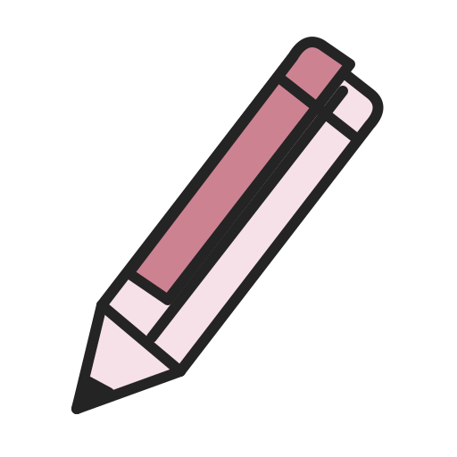

把复盘讲清楚
Make a retrospective useful

团队复盘示例 · A bilingual example
Make a retrospective useful
团队复盘示例 · A bilingual example
Start with what happened
Facts
哪些事情可以核对？
What can we verify?
Interpretation
我们怎样理解原因？
How do we explain it?
Next step
下次准备试什么？
What will we try next?
Turn discussion into the next step
One action
One owner
One check-in
让大家知道接下来要做什么
Make the next action easy to name.

Bring the action back to the next retrospective

What did we try?
What actually happened?